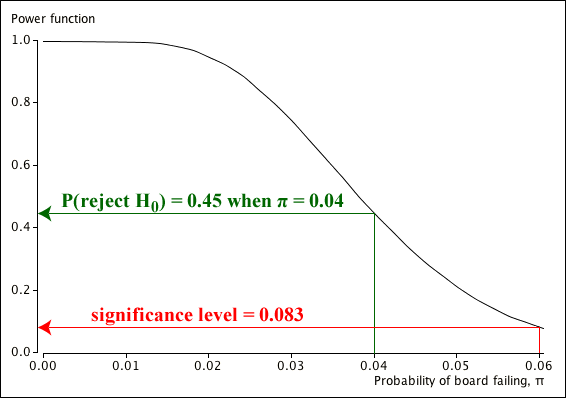
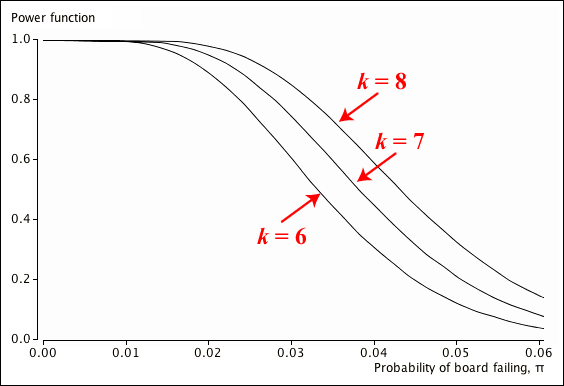

Definition
The power of a decision rule is the probability of correctly deciding that the alternative hypothesis is true when it really is true,
\[ \begin{align} \text{Power} \;&=\; 1 - P(\text{Type II error}) \\[0.3em] &=\; P\left(\text {decide }H_A \text{ is true} \mid H_A\right) \end{align} \]A test with high power is therefore desirable.
However the alternative hypothesis usually allows for a range of different parameter values, such as \(\mu \gt 12\). The power is really a power function that can be graphed against the possible parameter values.
Failure of printed circuit boards
The example on the previous page about a new method of producing printed circuit boards examined the hypotheses
We now consider the decision rule that rejects the null hypothesis if \(y=7\) or fewer fail out of a sample of \(n=200\) boards. The power function is
\[ \begin{align} \operatorname{Power}(\pi) \;&=\; P\left(\text {decide }H_A \text{ is true} \mid \pi \lt 0.06\right) \\[0.4em] &=\; P(X \le 7 \mid \pi \lt 0.06) \\ &=\; \sum_{x=0}^7 {200 \choose x} \; \pi^x \; (1 - \pi)^{200-x} \end{align} \]
At the null hypothesis value, \(\pi = 0.06\), the power function is simply the significance level of the test. The probability of rejecting H0 is higher when \(\pi\) is lower than this.
The power of the test is 0.746 when \(\pi = 0.03\). The engineer would be disappointed with this. It means that if the new manufacturing method has actually decreased the probability of failure to 0.03 from 0.06 (a big improvement), there is still a good chance (25%) that the null hypothesis, \(\pi = 0.06\), is accepted and the improvement is rejected.
Changing the decision criterion
The trade-off between low significance level and high power is illustrated in the diagram below. Changing the decision rule to increase the power (and decrease the probability of a Type II error) also increases its significance level (and probability of a Type I error).
